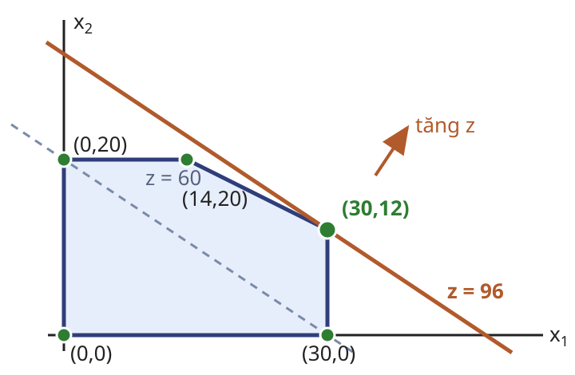
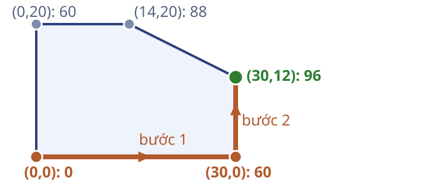

A. Muốn khai thác cấu trúc của tập phương án, trước hết phải viết quyết định thành mô hình toán học.
Biến quyết định: đại lượng được chọn, có đơn vị.Hàm mục tiêu: lợi ích hoặc chi phí, tuyến tính theo biến.Ràng buộc: mỗi nguồn lực giới hạn cho một bất phương trình tuyến tính.Bài toán phân bổ tài nguyên cho một danh sách dữ kiện: lợi ích trên mỗi đơn vị, mức tiêu hao và giới hạn. Danh sách này chưa phải mô hình. Mô hình xác định đại lượng nào được chọn (biến), đại lượng nào cố định (dữ kiện), và viết lợi ích cùng giới hạn thành biểu thức của biến. Khi cả ba thành phần đều tuyến tính, bài toán là một quy hoạch tuyến tính.
Nguồn: Bertsimas và Tsitsiklis (1997), §1.1.
Bài toán sản xuất hộp hạt
Một cơ sở đóng hai loại hộp hạt. Biến quyết định: $x_1,x_2$ là sản lượng loại 1 và loại 2, tính theo nghìn hộp.
Yêu cầu: chọn $x_1,x_2\ge0$ để tổng lợi ích lớn nhất mà không vượt giới hạn nào.
Đơn vị nghìn hộp cho phép xem sản lượng là đại lượng thực liên tục ở mức lập kế hoạch. Nếu quyết định chỉ nhận số lô nguyên, bài toán trở thành quy hoạch nguyên, nằm ngoài phạm vi bài. Các số $2,3$ (lợi ích), $1,2$ (giờ máy), $54$, $30$, $20$ được dùng xuyên bài.
Nguồn: Ví dụ tự tạo theo mô hình sản xuất trong Bertsimas và Tsitsiklis (1997), §1.2.
Ràng buộc từ giới hạn
Mỗi giới hạn cho một bất phương trình; hai vế cùng đơn vị. Phương án thỏa mọi ràng buộc gọi là khả thi ; tập các phương án khả thi là miền khả thi .
Sản lượng tối đa Loại 1 tối đa $30$, loại 2 tối đa $20$ nghìn hộp.
$$x_1\le30,\quad x_2\le20$$
Giờ máy $1$ giờ cho mỗi nghìn hộp loại 1, $2$ giờ cho loại 2; tối đa $54$ giờ.
$$x_1+2x_2\le54$$
Miền biến Sản lượng không âm.
$$x_1,x_2\ge0$$
Câu hỏi: phương án $(30,20)$ vi phạm giới hạn nào và vượt bao nhiêu?
Ràng buộc giờ máy cộng $1\cdot x_1$ giờ của loại 1 với $2x_2$ giờ của loại 2, nên vế trái tính bằng giờ như vế phải. Đáp án câu hỏi: $(30,20)$ thỏa hai giới hạn sản lượng nhưng dùng $30+2\cdot20=70$ giờ máy, vượt $16$ giờ.
Nguồn: Ví dụ tự tạo; phép tính kiểm tra trực tiếp.
Hàm mục tiêu và so sánh phương án
Tổng lợi ích là $z=2x_1+3x_2$. Mô hình đầy đủ:
$$\max\ 2x_1+3x_2\quad\text{với}\quad x_1\le30,\ \ x_2\le20,\ \ x_1+2x_2\le54,\ \ x_1,x_2\ge0.$$
Chỉ so sánh $z$ giữa các phương án khả thi. So sánh vài điểm chưa chứng minh được điểm nào tối ưu.
Điểm $(30,12)$ là giao của $x_1=30$ với đường giờ máy $x_1+2x_2=54$; điểm $(14,20)$ là giao của $x_2=20$ với cùng đường đó. Cả hai dùng hết $54$ giờ máy nhưng cho $z=2\cdot30+3\cdot12=96$ và $z=2\cdot14+3\cdot20=88$. Miền khả thi có vô số điểm, nên cần một lập luận chỉ ra tập ứng viên hữu hạn; phần hình học đa diện cung cấp lập luận đó.
Nguồn: Ví dụ tự tạo; các đỉnh và giá trị được kiểm tra đại số.
Định nghĩa quy hoạch tuyến tính
Định nghĩa. Quy hoạch tuyến tính (linear programming, LP) là bài toán tối ưu một hàm tuyến tính trên miền xác định bởi hữu hạn phương trình và bất phương trình tuyến tính. Dạng thường dùng, với $c\in\mathbb R^n$, $A\in\mathbb R^{m\times n}$, $b\in\mathbb R^m$:
$$\max_{x\in\mathbb R^n}\ c^Tx\quad\text{với}\quad Ax\le b,\quad x\ge0.$$
Ví dụ. Hộp hạt: $n=2$, $m=3$,
$$c=\begin{bmatrix}2\\3\end{bmatrix},\quad A=\begin{bmatrix}1&0\\0&1\\1&2\end{bmatrix},\quad b=\begin{bmatrix}30\\20\\54\end{bmatrix}.$$
Không phải LP: có tích $x_1x_2$ hoặc lũy thừa $x_1^2$; có điều kiện $x$ nguyên (quy hoạch nguyên). Dữ kiện của bài toán là $c,A,b$ và chiều tối ưu; $x$ là quyết định. Lời giải của một LP là giá trị tối ưu cùng một nghiệm tối ưu, hoặc kết luận bài toán không có nghiệm tối ưu. Dạng hiển thị chỉ là một quy ước: mọi LP đều đưa được về dạng này bằng cách đổi dấu hàng, thay mỗi phương trình bằng hai bất phương trình, hoặc tách biến tự do. Mỗi hàng của $A$ ứng với một giới hạn; trong ví dụ, hai hàng đầu là giới hạn sản lượng, hàng thứ ba là giờ máy. Điều kiện biến nguyên không làm biểu thức thành phi tuyến, nhưng làm miền quyết định rời rạc.
Nguồn: Bertsimas và Tsitsiklis (1997), §1.1.
Hồi quy chuẩn $L_1$ dưới dạng LP
Nhu cầu. $\sum_i|r_i|$ ít nhạy với ngoại lai (outlier) hơn bình phương nhưng không khả vi tại $r_i=0$.
Trực quan. $|r|=\min\{t:\ t\ge r,\ t\ge-r\}$.
Với $a_i,x\in\mathbb R^n$, $b_i\in\mathbb R$, phần dư $r_i=a_i^Tx-b_i$ và biến phụ $t_i\ge0$:
$$\min_{x,t}\ \textstyle\sum_{i=1}^m t_i\quad\text{với}\quad -t_i\le a_i^Tx-b_i\le t_i,\quad i=1,\ldots,m.$$
Ví dụ. $\min_x|x-1|+|x-3|$ đạt giá trị $2$ tại mọi $x\in[1,3]$.
Bình phương phần dư khuếch đại ngoại lai: phần dư $10$ đóng góp $100$ vào mất mát bình phương nhưng chỉ $10$ vào mất mát $L_1$. Hai bất phương trình tương đương $t_i\ge|r_i|$, nên điều kiện $t_i\ge0$ tự thỏa; ghi ra chỉ để giữ quy ước biến phụ không âm. Vì mục tiêu giảm tổng $t_i$ với hệ số dương, tại tối ưu $t_i=|r_i|$, nên LP và bài toán ban đầu có cùng $x$ tối ưu và cùng giá trị tối ưu. Ví dụ ứng với $n=1$, $a_1=a_2=1$, $b_1=1$, $b_2=3$. Với $x\in[1,3]$ có $|x-1|+|x-3|=(x-1)+(3-x)=2$; ngoài đoạn này tổng lớn hơn $2$, nên nghiệm không duy nhất.
Nguồn: Bertsimas và Tsitsiklis (1997), §1.3; ví dụ tự tạo.
Bài tập dựng mô hình
Câu hỏi: hai luồng suy luận dùng chung một GPU trong một giờ. Mỗi nghìn yêu cầu của luồng 1 và luồng 2 đem lợi ích $4$ và $5$ đơn vị, dùng $2$ và $1$ phút GPU. GPU có $14$ phút; luồng 1 nhận tối đa $8$ nghìn, luồng 2 tối đa $6$ nghìn yêu cầu.
Nêu biến quyết định và đơn vị. Viết hàm mục tiêu và chiều tối ưu. Viết mọi ràng buộc và miền biến. Kiểm tra tính khả thi và tính $z$ tại $(4,6)$. Đáp án: $x_1,x_2$ là số nghìn yêu cầu của luồng 1 và luồng 2. Mô hình: cực đại $4x_1+5x_2$ với $2x_1+x_2\le14$ (phút GPU), $x_1\le8$, $x_2\le6$ (nghìn yêu cầu), $x_1,x_2\ge0$. Điểm $(4,6)$ khả thi vì dùng $2\cdot4+6=14$ phút và thỏa hai giới hạn; $z=4\cdot4+5\cdot6=46$.
Nguồn: Bài tập tự tạo từ dữ kiện phân bổ tài nguyên.
B. So sánh từng phương án không chứng minh được tối ưu. Cần nhìn toàn bộ miền khả thi và tính được các đỉnh của nó.
Đa diện: miền khả thi là giao của các nửa không gian.Dạng chuẩn: biến phụ đưa bất phương trình về phương trình.Nghiệm cơ sở khả thi: tính một đỉnh bằng một hệ phương trình vuông.Miền khả thi có vô số điểm, nên liệt kê điểm không kết thúc được. Hình học cho thấy toàn bộ miền và vị trí của đường mức; đại số cho cách tính chính xác từng đỉnh trong nhiều chiều, nơi không còn vẽ được hình. Hàm mục tiêu không ảnh hưởng tới miền khả thi; nó chỉ chọn hướng của đường mức.
Nguồn: Bertsimas và Tsitsiklis (1997), §§2.1–2.3.
Đa diện và đường mức

Miền khả thi: giao của năm nửa không gian $x_1\le30$, $x_2\le20$, $x_1+2x_2\le54$, $x\ge0$.Đường mức $2x_1+3x_2=\alpha$: các điểm cùng giá trị $z$; tăng $\alpha$ thì đường dời theo hướng $(2,3)$.Đường mức xa nhất còn chạm miền: $z=96$, chỉ tại đỉnh $(30,12)$. Các đường mức song song vì cùng véc-tơ pháp tuyến $c=(2,3)$. Nét đứt $z=60$ cắt miền theo một đoạn nối hai đỉnh $(30,0)$ và $(0,20)$; tịnh tiến theo hướng $c$ thì $z$ tăng, và đường cuối cùng còn chạm miền là $z=96$. Giá trị tại năm đỉnh $(0,0),(30,0),(30,12),(14,20),(0,20)$ lần lượt là $0,60,96,88,60$. Hình gợi ý nghiệm tối ưu nằm ở một đỉnh; phần điểm cực chứng minh điều này trong mọi chiều.
Nguồn: Bertsimas và Tsitsiklis (1997), §2.1; hình tự vẽ.
Định nghĩa đa diện
Định nghĩa. Đa diện (polyhedron) là tập nghiệm của hữu hạn bất phương trình tuyến tính, với $A\in\mathbb R^{m\times n}$, $b\in\mathbb R^m$:
$$P=\{x\in\mathbb R^n:Ax\le b\}.$$
$P$ lồi vì là giao của các nửa không gian. $P$ bị chặn nếu có $K$ để $\|x\|\le K$ với mọi $x\in P$. Miền hộp hạt bị chặn; $\{x\ge0:\ x_1+x_2\ge1\}$ thì không. Phương trình $a^Tx=\beta$ tương đương hai bất phương trình, nên $\{x:Ax=b,\ x\ge0\}$ cũng là đa diện. Đa diện có thể rỗng và có thể kéo dài vô hạn, nên “đa diện” rộng hơn “đa giác” quen thuộc. Bất phương trình $x_1+x_2\ge1$ viết lại $-x_1-x_2\le-1$ để đúng dạng $Ax\le b$. Tính lồi cho phép dùng tổ hợp lồi khi định nghĩa điểm cực. Gạch cuối cho phép áp dụng mọi kết quả về đa diện cho dạng chuẩn ở trang sau.
Nguồn: Bertsimas và Tsitsiklis (1997), §2.1.
Dạng chuẩn
Nhu cầu. Đỉnh là giao của các ràng buộc chặt (thỏa với dấu bằng). Muốn tính đỉnh bằng hệ phương trình, cần viết mọi ràng buộc thành phương trình.
Quy ước. Dạng chuẩn (standard form), với $A\in\mathbb R^{m\times n}$, $\operatorname{rank}(A)=m\le n$:
$$\max\ c^Tx\quad\text{với}\quad Ax=b,\quad x\ge0.$$
Biến phụ (slack variable) đo phần giới hạn chưa dùng; biến dư (surplus variable) đo phần vượt trên cận dưới. Bài toán cực tiểu đổi sang cực đại bằng $\min c^Tx=-\max(-c^Tx)$. Tài liệu khác có thể gọi dạng $Ax\le b$ là dạng chuẩn; trong bài này, dạng chuẩn dùng phương trình và điều kiện không âm. Giả thiết $\operatorname{rank}(A)=m$ đạt được sau khi bỏ các phương trình phụ thuộc; nó bảo đảm chọn được $m$ cột độc lập, tức một ma trận vuông khả nghịch, ở định nghĩa nghiệm cơ sở.
Nguồn: Bertsimas và Tsitsiklis (1997), §2.2.
Dạng chuẩn của bài hộp hạt
Mỗi giới hạn nhận một biến phụ $s_i\ge0$, là phần giới hạn thứ $i$ chưa dùng.
$$\begin{aligned}x_1+s_1&=30,\\x_2+s_2&=20,\\x_1+2x_2+s_3&=54,\\x_1,x_2,s_1,s_2,s_3&\ge0.\end{aligned}$$
$$A=\begin{bmatrix}1&0&1&0&0\\0&1&0&1&0\\1&2&0&0&1\end{bmatrix},\quad b=\begin{bmatrix}30\\20\\54\end{bmatrix}$$
$m=3$, $n=5$; ba cột cuối cho $\operatorname{rank}(A)=3$.
Tại đỉnh $(30,12)$: $(s_1,s_2,s_3)=(0,8,0)$. Hai biến phụ bằng $0$ ứng với hai ràng buộc chặt $x_1=30$ và $x_1+2x_2=54$, cắt nhau tại đỉnh.
Thứ tự cột là $(x_1,x_2,s_1,s_2,s_3)$. Ba cột của biến phụ tạo ma trận đơn vị, nên $A$ có hạng hàng đầy đủ mà không cần bỏ phương trình nào. Dạng chuẩn có $5$ biến và $3$ phương trình; một đỉnh của hình hai chiều ứng với việc cho $5-3=2$ biến bằng $0$. Tại $(30,12)$, giới hạn loại 2 còn dư $s_2=8$ nghìn hộp.
Nguồn: Bertsimas và Tsitsiklis (1997), §2.2; ví dụ tự tạo.
Nghiệm cơ sở khả thi
Với $P=\{x:Ax=b,x\ge0\}$ và $\operatorname{rank}(A)=m$, chọn $B\subset\{1,\ldots,n\}$, $|B|=m$.
$A_B$ phải khả nghịch. Đặt $x_N=0$ với $N=B^c$. Tính $x_B=A_B^{-1}b$. Nghiệm là cơ sở khả thi khi $x_B\ge0$. Nghiệm cơ sở khả thi suy biến khi ít nhất một thành phần của $x_B$ bằng $0$; nhiều cơ sở có thể biểu diễn cùng một điểm.
Điều kiện $m\le n$ và hạng hàng đầy đủ là cần để chọn ma trận cơ sở vuông khả nghịch, nhưng chưa đủ cho tính khả thi. Phải kiểm $A_B^{-1}b\ge0$.
Nguồn: Bertsimas và Tsitsiklis (1997), §§2.2–2.3.
Nghiệm cơ sở của bài hộp hạt
Câu hỏi: với thứ tự cột $(x_1,x_2,s_1,s_2,s_3)$, tại đỉnh $(30,12)$ hãy kiểm cơ sở chỉ số $B=\{1,2,4\}$, tương ứng $\{x_1,x_2,s_2\}$.
$$A_B=\begin{bmatrix}1&0&0\\0&1&1\\1&2&0\end{bmatrix},\qquad b=\begin{bmatrix}30\\20\\54\end{bmatrix}.$$
Kiểm $\det(A_B)\ne0$. Đặt $s_1=s_3=0$. Giải $A_B(x_1,x_2,s_2)^T=b$ và kiểm không âm. Ta có $\det(A_B)=-2\ne0$. Nghiệm cơ sở là $(x_1,x_2,s_2)=(30,12,8)$; cùng $s_1=s_3=0$, toàn bộ véc-tơ không âm. Vì vậy đây là nghiệm cơ sở khả thi của chính ví dụ xuyên bài, không phải một hệ rời rạc mới.
Nguồn: Bài tập tự tạo theo Bertsimas và Tsitsiklis (1997), §2.2.
C. Miền khả thi có vô số điểm. Hình học điểm cực thu hẹp nơi cần tìm, nhưng chỉ dưới các giả thiết được nêu rõ.
Định nghĩa hình học bằng tổ hợp lồi. Đặc trưng đại số bằng nghiệm cơ sở khả thi. Bảo đảm tồn tại và tối ưu tại điểm cực. Đây là bước nối từ hình học sang thuật toán. Không phát biểu “mọi nghiệm tối ưu đều là đỉnh”; khi mục tiêu song song với một cạnh, cả cạnh có thể tối ưu.
Nguồn: Bertsimas và Tsitsiklis (1997), §§2.3–2.5.
Định nghĩa hình học của điểm cực
Định nghĩa. $v\in P$ là điểm cực nếu
$$v=\lambda y+(1-\lambda)z,\quad y,z\in P,\quad 0<\lambda<1$$
chỉ có thể xảy ra khi $y=z=v$.
Điểm nằm trong đoạn thẳng không tầm thường của $P$ không phải điểm cực.
Điều kiện $0<\lambda<1$ loại hai đầu mút của tổ hợp. Trên đa giác hai chiều, điểm cực chính là đỉnh theo trực giác; định nghĩa vẫn đúng trong nhiều chiều.
Nguồn: Bertsimas và Tsitsiklis (1997), §2.3.
Đặc trưng đại số
Định lý. Với $P=\{x:Ax=b,x\ge0\}$, $x\in P$ và $\operatorname{rank}(A)=m$, các mệnh đề sau tương đương:
$x$ là điểm cực của $P$; $x$ là nghiệm cơ sở khả thi; các cột $A_j$ ứng với $x_j>0$ độc lập tuyến tính. Một điểm cực có nhiều nhất $m$ thành phần dương.
Điểm suy biến có thể có ít hơn $m$ thành phần dương và tương ứng với nhiều cơ sở. Định lý chỉ áp dụng sau khi đã khóa dạng chuẩn và hạng hàng đầy đủ.
Nguồn: Bertsimas và Tsitsiklis (1997), §2.3.
Ví dụ nhiều nghiệm tối ưu
$$\min\ -x_1-x_2\quad\text{với}\quad x_1+x_2\le2,\quad x_1,x_2\ge0.$$
Điểm cực $(0,0)$, $(2,0)$, $(0,2)$.
Tập nghiệm tối ưu Mọi điểm trên $x_1+x_2=2$, $x\ge0$.
Có điểm cực tối ưu, nhưng điểm $(1,1)$ tối ưu mà không phải điểm cực.
Giá trị nhỏ nhất là $-2$. Ví dụ phân biệt phát biểu đúng “tồn tại một điểm cực tối ưu” với phát biểu sai “mọi nghiệm tối ưu đều là điểm cực”.
Nguồn: Ví dụ tự tạo theo Bertsimas và Tsitsiklis (1997), §2.5.
Bảo đảm tồn tại điểm cực
$$P=\{x:Ax=b,\ x\ge0\},\ x\in P:\quad x+td\in P\ \forall t\in\mathbb R\Longrightarrow d=0.$$
Mục tiêu chứng minh: xác định khi một đa diện không rỗng có điểm cực và suy ra bảo đảm cho dạng chuẩn.
Ý tưởng: một hướng đường thẳng hai phía ngăn mọi điểm là điểm cực; chiều ngược lại dùng cấu trúc hữu hạn của đa diện không chứa đường thẳng để thu được một điểm cực.
Các bước: nếu đa diện chứa đường $x+td$, thì hướng $d\ne0$ thuộc không gian đường của đa diện; do đó với mọi $y\in P$, cả $y-d$ và $y+d$ đều thuộc $P$, nên $y$ không thể là điểm cực. Định lý đa diện cho chiều đảo. Với hệ quả dạng chuẩn, điều kiện $x+td\ge0$ cho cả $t$ dương lẫn âm buộc $d=0$.
Điểm dùng giả thiết: tính không rỗng cần để kết luận tồn tại; cấu trúc đa diện hữu hạn cần cho chiều đảo; điều kiện $x\ge0$ loại mọi đường thẳng trong hệ quả.
Nguồn: Bertsimas và Tsitsiklis (1997), §2.4.
Điểm cực tối ưu và đỉnh kề
Định lý. Cho đa diện $P$ có ít nhất một điểm cực. Nếu $\max_{x\in P}c^Tx$ có giá trị tối ưu hữu hạn, thì có một điểm cực tối ưu.
Bổ đề cầu nối. Cho $P$ có điểm cực và $\max_{x\in P}c^Tx$ có giá trị tối ưu hữu hạn. Nếu điểm cực $v$ chưa tối ưu, thì tồn tại điểm cực $w$ kề $v$ sao cho $c^Tw>c^Tv$.
Mục tiêu chứng minh: chỉ ra rằng kiểm các đỉnh kề đủ để phát hiện một đỉnh chưa tối ưu và suy ra tồn tại đỉnh tối ưu.
Ý tưởng: nón tiếp xúc tại $v$ được sinh bởi các hướng cạnh và các hướng suy thoái. Nếu có điểm tốt hơn, một hướng sinh phải cải thiện mục tiêu.
Các bước: lấy $x\in P$ với $c^Tx>c^Tv$, nên $d=x-v$ thuộc nón tiếp xúc và $c^Td>0$. Phân rã $d$ theo các hướng cạnh và hướng suy thoái. Giá trị tối ưu hữu hạn buộc $c^Tr\le0$ với mọi hướng suy thoái $r$; do đó ít nhất một hướng cạnh có tích vô hướng dương và dẫn đến điểm cực kề $w$ với $c^Tw>c^Tv$. Đa diện có hữu hạn điểm cực, nên các bước cải thiện nghiêm ngặt phải dừng ở một điểm cực tối ưu.
Điểm dùng giả thiết: “có điểm cực” loại đường thẳng và cho các hướng cạnh; “giá trị tối ưu hữu hạn” loại hướng suy thoái cải thiện. Suy biến có thể làm nhiều cơ sở biểu diễn cùng một điểm và gây quay vòng khi pivot, nhưng không làm mất sự tồn tại của điểm cực kề cải thiện.
Nguồn: Bertsimas và Tsitsiklis (1997), §§2.4–2.5.
Bốn kết cục của quy hoạch tuyến tính
Bốn kết cục dùng trong bài: không khả thi, tức miền khả thi rỗng; khả thi nhưng giá trị mục tiêu không bị chặn theo chiều tối ưu; có giá trị tối ưu hữu hạn với nghiệm duy nhất; có giá trị tối ưu hữu hạn với nhiều nghiệm. Trong hai trường hợp hữu hạn, ít nhất một điểm cực tối ưu tồn tại dưới dạng chuẩn.
Nguồn: Bertsimas và Tsitsiklis (1997), §§1.1, 2.5; hình tự vẽ.
Mô tả thuật toán ở mức ý niệm
Đầu vào: đa diện $P$ có điểm cực, $\max_{x\in P}c^Tx$ có giá trị tối ưu hữu hạn và một điểm cực xuất phát.Tại điểm cực hiện tại, tìm một điểm cực kề có giá trị mục tiêu cải thiện nghiêm ngặt. Chuyển sang điểm cực kề đó. Dừng: khi không còn điểm cực kề cải thiện; theo bổ đề đỉnh kề, điểm hiện tại tối ưu.Trên bài hộp hạt: $(0,0)\to(30,0)\to(30,12)$, với $z:0\to60\to96$.
Chuỗi số cụ thể cho thấy mỗi bước giữ khả thi và cải thiện nghiêm ngặt. Điều kiện đầu vào khớp bổ đề đỉnh kề: đa diện phải có điểm cực và mục tiêu phải có giá trị tối ưu hữu hạn. Suy biến không làm sai tiêu chuẩn dừng ở mức đồ thị đỉnh; khó khăn xuất hiện khi một quy tắc pivot đi qua nhiều cơ sở của cùng một đỉnh và có thể quay vòng. Cách tìm điểm cực xuất phát, chọn cạnh và chống quay vòng thuộc phương pháp đơn hình ở Bài 08.
Nguồn: Đề cương UET.AI2012, Chương 10.6; Bertsimas và Tsitsiklis (1997), §2.5; phép tính từ ví dụ hộp hạt.
Đường đi qua các đỉnh kề

$(0,0)$: $z=0$. $(30,0)$: $z=60$. $(30,12)$: $z=96$, tối ưu. Đây là đường đi cụ thể trên đúng đa diện hộp hạt. Hai đoạn được tô đậm là hai cạnh của miền khả thi. Hình không mô tả phép pivot; nó chỉ cung cấp trực giác hình học cho bước “đỉnh kề cải thiện”.
Nguồn: Bertsimas và Tsitsiklis (1997), §2.5; hình tự vẽ từ dữ kiện hộp hạt.
Bài tập chuyển giao về điểm cực
Câu hỏi: xét $\max x_1+x_2$ với $x_1+2x_2\le4$, $3x_1+x_2\le6$, $x\ge0$.
Kiểm tra bốn đỉnh $(0,0),(2,0),(1{,}6,1{,}2),(0,2)$. Tính mục tiêu và phân loại kết cục. Cho một đường đỉnh kề cải thiện từ $(0,0)$. Nêu định lý được dùng và đầy đủ giả thiết. Các giá trị mục tiêu lần lượt là $0,2,2{,}8,2$. Đường hợp lệ: $(0,0)\to(2,0)\to(1{,}6,1{,}2)$ với giá trị $0\to2\to2{,}8$. Miền là đa diện có các điểm cực đã liệt kê và mục tiêu có giá trị tối ưu hữu hạn; vì vậy định lý điểm cực tối ưu áp dụng. Nghiệm tối ưu duy nhất là $(1{,}6,1{,}2)$.
Nguồn: Bài tập tự tạo từ một đa diện hai chiều.
Bài tập tích hợp quy hoạch tuyến tính
Câu hỏi: với bài hộp hạt, hãy hoàn tất chuỗi lập luận.
Viết LP và dạng chuẩn có biến phụ. Liệt kê năm đỉnh và giá trị mục tiêu. Phân loại kết cục của bài toán. Nêu định lý bảo đảm có điểm cực tối ưu. Nêu đỉnh xuất phát, bước sang đỉnh kề cải thiện và tiêu chuẩn dừng. Đáp án chính: các đỉnh có giá trị $0,60,96,88,60$; bài toán hữu hạn với nghiệm tối ưu duy nhất $(30,12)$. Mô tả ở mức ý niệm bắt đầu từ một đỉnh khả thi, chuyển qua đỉnh kề cải thiện nghiêm ngặt và dừng khi không còn đỉnh kề cải thiện. Bài tập khép phần LP trước khi đổi đối tượng sang chuỗi quyết định.
Nguồn: Bài tập tích hợp từ ví dụ hộp hạt.
D. LP: một véc-tơ quyết định Cấu trúc đa diện thu hẹp việc tìm kiếm về các điểm cực và cơ sở.
DP: một chuỗi quyết định Trạng thái thu hẹp việc tìm kiếm bằng cách dùng lại các bài toán con.
Phạm vi DP: chân trời hữu hạn, trạng thái và điều khiển hữu hạn, chuyển trạng thái tất định, chi phí cộng.
Đây là phép so sánh hai cơ chế khai thác cấu trúc, không phải phát biểu LP và DP tương đương. LP dùng hình học đa diện của một véc-tơ quyết định; DP dùng trạng thái để tái sử dụng chi phí còn lại của một chuỗi quyết định.
Nguồn: Đề cương UET.AI2012; MIT 15.093J, Bài 16.
Nhu cầu của quyết định nhiều giai đoạn
Trạng thái hiện tại
→
Quyết định
→
Trạng thái kế
→
Chi phí còn lại
Liệt kê vét cạn mọi chuỗi quyết định sẽ giải lặp lại nhiều bài toán con giống nhau.
Quy hoạch động khai thác cấu trúc con tối ưu: một trạng thái phải lưu đủ thông tin ảnh hưởng đến tương lai, nhưng bỏ chi tiết quá khứ không còn liên quan.
Nguồn: MIT 15.093J, Bài 16, trang 6–9.
Ví dụ đường đi theo tầng
Tính ngược: $J(C)=3$ và $J(D)=1$. Tại $A$, chọn $D$ vì $2+1=3$ nhỏ hơn $4+3=7$. Tại $B$, hai lựa chọn cùng cho $4$: $1+3=3+1=4$. Tại $s$, chọn $A$ vì $2+3=5$ nhỏ hơn $5+4=9$. Đường tối ưu là $s\to A\to D\to t$.
Nguồn: Ví dụ và hình tự tạo theo khuôn đồ thị tầng của MIT 15.093J, Bài 16.
Phương trình Bellman hữu hạn tất định
Quyết định được chọn ở $k=0,\ldots,N-1$; giai đoạn $N$ chỉ mang chi phí cuối. Với trạng thái $x_k$, điều khiển $u\in U_k(x_k)$ và $x_{k+1}=f_k(x_k,u)$:
$$J_N(x)=g_N(x),\qquad J_k(x)=\min_{u\in U_k(x)}\left\{g_k(x,u)+J_{k+1}(f_k(x,u))\right\}.$$
Trong phạm vi bài, $U_k(x)$ hữu hạn và không rỗng nên giá trị nhỏ nhất được đạt.
Không mở rộng sang điều khiển liên tục, vô hạn ngẫu nhiên hoặc chân trời vô hạn. Trong đồ thị tầng, mỗi tập cạnh đi ra là hữu hạn; vì vậy phép lấy min chọn được ít nhất một cạnh.
Nguồn: MIT 15.093J, Bài 16, trang 7–9.
Quy trình giải ngược
Đầu vào: chân trời $N$, trạng thái, tập điều khiển không rỗng, chuyển trạng thái và chi phí cộng.Khởi tạo $J_N=g_N$. Với $k=N-1,\ldots,0$, tính $J_k$ bằng Bellman và lưu một điều khiển đạt min. Đầu ra: $J_0(x_0)$ và chính sách tối ưu.Số cặp trạng thái–điều khiển được duyệt là $\sum_{k=0}^{N-1}\sum_{x\in X_k}|U_k(x)|$; bảng Bellman dùng lại mỗi bài toán con thay vì duyệt mọi chuỗi.
Trong đồ thị tầng, trạng thái là nút hiện tại, điều khiển là cạnh đi ra và chi phí giai đoạn là trọng số cạnh. Tính bảng từ tầng cuối về đầu tránh giải lại cùng bài toán con.
Nguồn: MIT 15.093J, Bài 16, trang 6–9.
Bài tập chuyển giao Bellman
Câu hỏi: giữ đồ thị ví dụ đường đi theo tầng nhưng đổi $c(s,B)=3$ và $c(C,t)=0$. Các cạnh khác giữ nguyên. Hãy tính lại mọi $J$ và nêu đường tối ưu.
Đáp án: $J(C)=0$, $J(D)=1$, $J(A)=\min\{4+0,2+1\}=3$, $J(B)=\min\{1+0,3+1\}=1$, $J(s)=\min\{2+3,3+1\}=4$. Đường tối ưu mới là $s\to B\to C\to t$. Đây là dữ kiện mới, nên người học phải tái tạo Bellman thay vì chép kết quả của ví dụ trước.
Nguồn: Bài tập chuyển giao tự tạo theo MIT 15.093J, Bài 16.